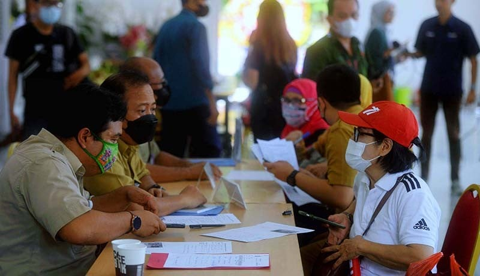

Buat Pengaduan Baru
MAR 18, 2025
 Ajukan Pengaduan
Sistem Pengaduan Masyarakat adalah platform yang memungkinkan warga
untuk menyampaikan keluhan, laporan, atau aspirasi terkait pelayanan
publik. Dengan sistem ini, setiap pengaduan akan ditindaklanjuti
secara profesional dan transparan oleh instansi terkait.
Pengaduan dapat berupa keluhan tentang infrastruktur, pelayanan
kesehatan, pendidikan, atau masalah sosial lainnya. Setiap pengaduan
yang masuk akan diverifikasi terlebih dahulu sebelum diproses lebih
lanjut. Masyarakat dapat melacak status pengaduan mereka secara
real-time melalui sistem ini.
Lacak Status Pengaduan

Setelah mengajukan pengaduan, Anda akan mendapatkan nomor tiket yang
dapat digunakan untuk melacak status pengaduan. Sistem ini
menyediakan informasi real-time tentang tahapan penanganan pengaduan
Anda.
Status pengaduan meliputi: "Diterima", "Dalam Proses Verifikasi",
"Ditindaklanjuti", dan "Selesai". Rata-rata waktu penanganan
pengaduan adalah 3-7 hari kerja, tergantung pada kompleksitas
masalah yang dilaporkan.
Kami berkomitmen untuk memberikan update secara berkala tentang
perkembangan penanganan setiap pengaduan. Transparansi proses
penanganan menjadi prioritas utama dalam sistem ini.
Prosedur Pengaduan

Berikut adalah prosedur pengaduan masyarakat yang harus diikuti:
1. Isi formulir pengaduan dengan data yang lengkap dan benar
2. Lampirkan bukti pendukung (foto, dokumen, dll) jika diperlukan
3. Submit formulir dan dapatkan nomor tiket pengaduan
4. Tunggu proses verifikasi oleh petugas (1-2 hari kerja)
5. Lacak status pengaduan secara berkala
6. Berikan tanggapan jika diminta oleh petugas penanganan
7. Berikan penilaian setelah pengaduan selesai ditangani
Setiap pengaduan akan ditangani sesuai dengan standar operasional
prosedur yang berlaku. Waktu penanganan bervariasi tergantung pada
kompleksitas masalah yang dilaporkan.
FAQ (Pertanyaan Umum)
| Pertanyaan | Jawaban |
|---|---|
| Berapa lama waktu penanganan pengaduan? | Rata-rata 3-7 hari kerja tergantung kompleksitas masalah |
| Apakah data pelapor dirahasiakan? | Ya, identitas pelapor dijamin kerahasiaannya |
| Bagaimana jika pengaduan saya tidak ditanggapi? | Anda dapat mengajukan komplain melalui saluran khusus |
| Apakah ada biaya untuk mengajukan pengaduan? | Tidak, layanan ini sepenuhnya gratis |
| Jenis pengaduan apa saja yang bisa diajukan? | Semua masalah terkait pelayanan publik |


Tinggalkan Komentar
Alamat email Anda tidak akan dipublikasikan. Ruas yang wajib ditandai *